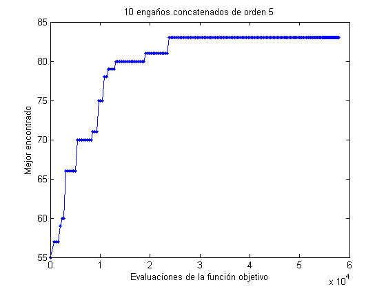
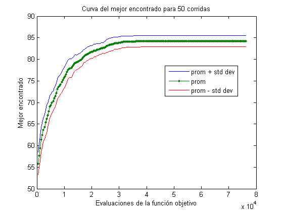
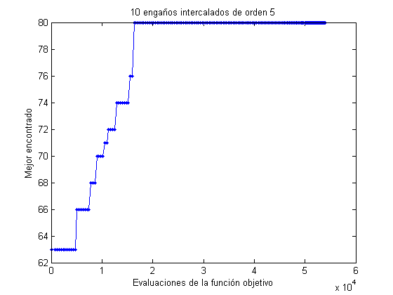
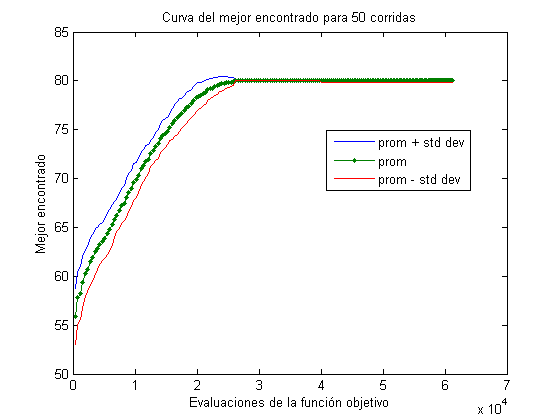

Problemas con engaños concatenados e intercalados
En este script probamos los resultados de Godlberg para problemas engañosos
Contents
Problemas engañosos concatenados, una corrida
Primero, una sola corrida para afinar el tamaño de pobalción
n = 400; % tamaño de población k = 5; % orden de engaño m = 10; % número de engaños generaciones = 200; objCon = @(x) sum(deceptive(x,k)); p = population('i',k*ones(1,m)); p = random(p,n); p = evaluate(p,objCon); best = get(p,'best'); e = 0; b = best.fitness; for i=1:generaciones p = sus(p); p = crossover(p); p = mutation(p); p = evaluate(p,objCon); best = get(p,'best'); e(i+1) = get(p,'evals'); b(i+1) = best.fitness; plot(e,b,'.-') xlabel('Evaluaciones de la función objetivo') ylabel('Mejor encontrado') title(sprintf('%d engaños concatenados de orden %d',m,k)) pause(0.01) end
Problemas engañosos concatenados, curva del mejor encontrado
Ahora obtenemos la curva completa
corridas = 50; E = []; Be = []; p = population('i',k*ones(1,m)); for j=1:corridas p = init(p); p = random(p,n); p = evaluate(p,objCon); best = get(p,'best'); e = get(p,'evals'); b = best.fitness; for i=1:generaciones p = sus(p); p = crossover(p); p = mutation(p); p = evaluate(p,objCon); best = get(p,'best'); e(i+1) = get(p,'evals'); b(i+1) = best.fitness; end E = [E e']; Be = [Be b']; x = max(E,[],2); prom = mean(Be,2); fig1 = std(Be,[],2); plot(x,prom+fig1,x,prom,'.-',x,prom-fig1,e,b,'-.k') xlabel('Evaluaciones de la función objetivo') ylabel('Mejor encontrado') title(sprintf('%d engaños concatenados de orden %d (%d corridas)',m,k,j)) legend('prom + std dev','prom','prom - std dev','ultima corrida',0) pause(0.01) end plot(x,prom+fig1,x,prom,'.-',x,prom-fig1) %axis([0 max(max(E)) 0 ceil(logB(2^N,B))]) xlabel('Evaluaciones de la función objetivo') ylabel('Mejor encontrado') title(sprintf('Curva del mejor encontrado para %d corridas',j)) legend('prom + std dev','prom','prom - std dev',0)
Problemas engañosos intercalados, una corrida
Primero, una sola corrida
n = 400; % tamaño de población k = 5; % orden de engaño m = 10; % número de engaños generaciones = 200; objInter = @(x) sum(interDeceptive(x,m)); p = population('i',m*ones(1,k)); p = random(p,n); p = evaluate(p,objInter); best = get(p,'best'); e = 0; b = best.fitness; for i=1:generaciones p = sus(p); p = crossover(p); p = mutation(p); p = evaluate(p,objInter); best = get(p,'best'); e(i+1) = get(p,'evals'); b(i+1) = best.fitness; plot(e,b,'.-') xlabel('Evaluaciones de la función objetivo') ylabel('Mejor encontrado') title(sprintf('%d engaños intercalados de orden %d',m,k)) pause(0.01) end
Problemas engañosos intercalados, curva del mejor encontrado
Ahora obtenemos la curva completa
corridas = 50; E = []; Be = []; p = population('i',m*ones(1,k)); for j=1:corridas p = init(p); p = random(p,n); p = evaluate(p,objInter); best = get(p,'best'); e = get(p,'evals'); b = best.fitness; for i=1:generaciones p = sus(p); p = crossover(p); p = mutation(p); p = evaluate(p,objInter); best = get(p,'best'); e(i+1) = get(p,'evals'); b(i+1) = best.fitness; end E = [E e']; Be = [Be b']; x = max(E,[],2); prom = mean(Be,2); fig1 = std(Be,[],2); plot(x,prom+fig1,x,prom,'.-',x,prom-fig1,e,b,'-.k') xlabel('Evaluaciones de la función objetivo') ylabel('Mejor encontrado') title(sprintf('%d engaños intercalados de orden %d (%d corridas)',m,k,j)) legend('prom + std dev','prom','prom - std dev','ultima corrida',0) pause(0.01) end plot(x,prom+fig1,x,prom,'.-',x,prom-fig1) %axis([0 max(max(E)) 0 ceil(logB(2^N,B))]) xlabel('Evaluaciones de la función objetivo') ylabel('Mejor encontrado') title(sprintf('Curva del mejor encontrado para %d corridas',j)) legend('prom + std dev','prom','prom - std dev',0)